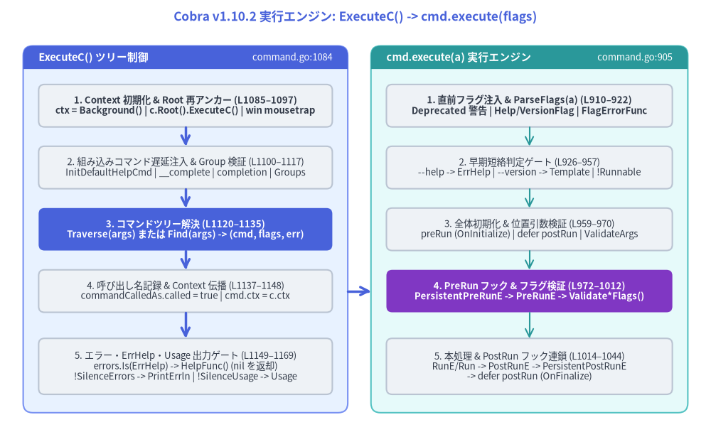
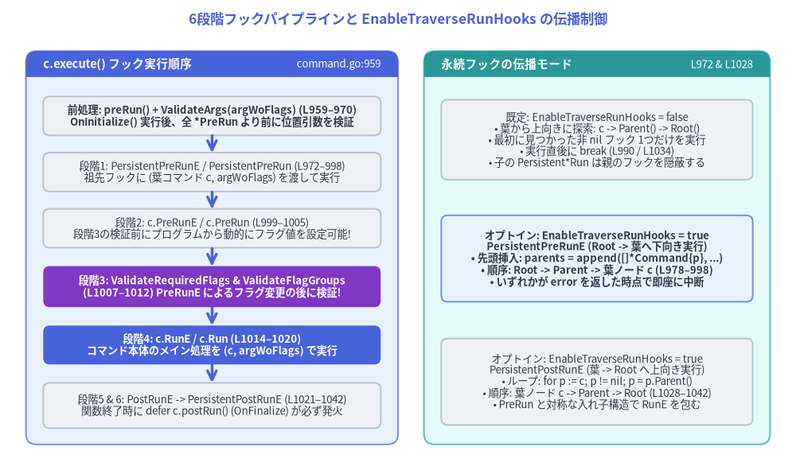

ExecuteC と Command.execute() ライフサイクルエンジン (command.go:905–1314, command_win.go)
構築された Cobra CLI の実行は、*Command に定義された4つの公開エントリーメソッド — Execute()、ExecuteC()、ExecuteContext(ctx)、ExecuteContextC(ctx) (command.go:1062–1084) — のいずれかから開始されます。これら4つのメソッドはすべて、以下の2フェーズ実行エンジンへ集約されます。
ExecuteC()(command.go:1084–1170): ツリー全体のオーケストレーション —context.Contextの初期化、c.Root()への再アンカー、Windowsmousetrap起動チェック、組み込みコマンド（help、__complete、completion）の遅延注入、コマンドグループ整合性チェック、TraverseまたはFindによる解決、およびトップレベルのエラー／flag.ErrHelp出力制御を担います。c.execute(a []string)(command.go:905–1045): 単一ノードのライフサイクル実行 —--help／--versionフラグの直前登録、ParseFlags(a)の実行、OnInitialize／OnFinalizeコールバックの発火、ValidateArgsによる位置引数検証、および 6段階のフック＆フラグ検証パイプライン を駆動します。

Source Code
from drawlib.canvas import save, setup
from drawlib.lines import line
from drawlib.shapes import rectangle
from drawlib.smartarts import Panel
from drawlib.styles import Styles
from drawlib.text import text
setup(width=184, height=112)
text(
(92, 107.5),
"Cobra v1.10.2 実行エンジン: ExecuteC() -> cmd.execute(flags)",
style=Styles.PrimaryBold.patch(text_size=12.5),
)
# Left Panel: ExecuteC() Tree Orchestrator
Panel(
"ExecuteC() ツリー制御",
"command.go:1084",
style=Styles.PrimaryNeutral,
header_style=Styles.PrimaryFlat,
text_style=Styles.WhiteBold.patch(text_size=10.5),
description_style=Styles.White.patch(text_size=9.5),
header_height=6.0,
).draw((6, 5), width=84, height=95)
rectangle(
(48, 84.5),
width=76,
height=11.0,
style=Styles.Neutral.patch(shape_r=1.5),
text="1. Context 初期化 & Root 再アンカー (L1085–1097)\nctx = Background() | c.Root().ExecuteC() | win mousetrap",
text_style=Styles.DarkBold.patch(text_size=9.5),
)
rectangle(
(48, 68.5),
width=76,
height=11.0,
style=Styles.Neutral.patch(shape_r=1.5),
text="2. 組み込みコマンド遅延注入 & Group 検証 (L1100–1117)\nInitDefaultHelpCmd | __complete | completion | Groups",
text_style=Styles.Dark.patch(text_size=9.5),
)
rectangle(
(48, 52.5),
width=76,
height=11.0,
style=Styles.PrimaryFlat.patch(shape_r=1.5),
text="3. コマンドツリー解決 (L1120–1135)\nTraverse(args) または Find(args) -> (cmd, flags, err)",
text_style=Styles.WhiteBold.patch(text_size=9.5),
)
rectangle(
(48, 36.5),
width=76,
height=11.0,
style=Styles.Neutral.patch(shape_r=1.5),
text="4. 呼び出し名記録 & Context 伝播 (L1137–1148)\ncommandCalledAs.called = true | cmd.ctx = c.ctx",
text_style=Styles.Dark.patch(text_size=9.5),
)
rectangle(
(48, 17.0),
width=76,
height=14.5,
style=Styles.Neutral.patch(shape_r=1.5),
text="5. エラー・ErrHelp・Usage 出力ゲート (L1149–1169)\nerrors.Is(ErrHelp) -> HelpFunc() (nil を返却)\n!SilenceErrors -> PrintErrln | !SilenceUsage -> Usage",
text_style=Styles.Dark.patch(text_size=9.5),
)
line((48, 79.0), (48, 74.0), arrow_head="->", style=Styles.PrimaryBold)
line((48, 63.0), (48, 58.0), arrow_head="->", style=Styles.PrimaryBold)
line((48, 47.0), (48, 42.0), arrow_head="->", style=Styles.PrimaryBold)
line((48, 31.0), (48, 24.25), arrow_head="->", style=Styles.PrimaryBold)
# Right Panel: cmd.execute(flags) Lifecycle
Panel(
"cmd.execute(a) 実行エンジン",
"command.go:905",
style=Styles.SecondaryNeutral,
header_style=Styles.SecondaryFlat,
text_style=Styles.WhiteBold.patch(text_size=10.5),
description_style=Styles.White.patch(text_size=9.5),
header_height=6.0,
).draw((96, 5), width=82, height=95)
rectangle(
(137, 84.5),
width=74,
height=11.0,
style=Styles.Neutral.patch(shape_r=1.5),
text="1. 直前フラグ注入 & ParseFlags(a) (L910–922)\nDeprecated 警告 | Help/VersionFlag | FlagErrorFunc",
text_style=Styles.DarkBold.patch(text_size=9.5),
)
rectangle(
(137, 68.5),
width=74,
height=11.0,
style=Styles.Neutral.patch(shape_r=1.5),
text="2. 早期短絡判定ゲート (L926–957)\n--help -> ErrHelp | --version -> Template | !Runnable",
text_style=Styles.Dark.patch(text_size=9.5),
)
rectangle(
(137, 52.5),
width=74,
height=11.0,
style=Styles.Neutral.patch(shape_r=1.5),
text="3. 全体初期化 & 位置引数検証 (L959–970)\npreRun (OnInitialize) | defer postRun | ValidateArgs",
text_style=Styles.Dark.patch(text_size=9.5),
)
rectangle(
(137, 36.5),
width=74,
height=11.0,
style=Styles.AccentFlat.patch(shape_r=1.5),
text="4. PreRun フック & フラグ検証 (L972–1012)\nPersistentPreRunE -> PreRunE -> Validate*Flags()",
text_style=Styles.WhiteBold.patch(text_size=9.5),
)
rectangle(
(137, 17.0),
width=74,
height=14.5,
style=Styles.Neutral.patch(shape_r=1.5),
text="5. 本処理 & PostRun フック連鎖 (L1014–1044)\nRunE/Run -> PostRunE -> PersistentPostRunE\n-> defer postRun (OnFinalize)",
text_style=Styles.Dark.patch(text_size=9.5),
)
line((137, 79.0), (137, 74.0), arrow_head="->", style=Styles.Secondary)
line((137, 63.0), (137, 58.0), arrow_head="->", style=Styles.Secondary)
line((137, 47.0), (137, 42.0), arrow_head="->", style=Styles.Secondary)
line((137, 31.0), (137, 24.25), arrow_head="->", style=Styles.Secondary)
# Cross-panel invocation arrow
line((90, 36.5), (96, 36.5), arrow_head="->", style=Styles.PrimaryBold)
save()
1. フェーズ1: ExecuteC() によるツリーレベル制御 (command.go:1062–1170)
1.1 4つの公開エントリーポイント (command.go:1062–1084)
func (c *Command) ExecuteContext(ctx context.Context) error {
c.ctx = ctx
return c.Execute()
}
func (c *Command) Execute() error {
_, err := c.ExecuteC()
return err
}
func (c *Command) ExecuteContextC(ctx context.Context) (*Command, error) {
c.ctx = ctx
return c.ExecuteC()
}
これら4メソッドはすべて ExecuteC() (cmd *Command, err error) (command.go:1084) に合流し、以下の10ステップを順番に実行します。
| ステップ | ソースコード行 | 実行内容 | アーキテクチャ上の意図 |
|---|---|---|---|
1. デフォルト ctx 生成 |
command.go:1085–1087 |
if c.ctx == nil { c.ctx = context.Background() } |
Execute() 開始後、ValidArgsFunction や各 *Run* フック内で cmd.Context() が決して nil にならないことを保証します。 |
| 2. Root への再アンカー | command.go:1090–1092 |
if c.HasParent() { return c.Root().ExecuteC() } |
呼び出し側が誤って子コマンド subCmd.Execute() を呼んだ場合でも、必ず Root() まで遡って CLI 全体として引数解決を開始します。 |
3. Windows preExecHookFn |
command.go:1095–1097command_win.go:28–41 |
if preExecHookFn != nil { preExecHookFn(c) } |
Windows ビルド (//go:build windows) 時のみ mousetrap.StartedByExplorer() を判定します。エクスプローラーから直接ダブルクリック起動され MousetrapHelpText != "" の場合、案内文を表示し MousetrapDisplayDuration（既定 5秒、<=0 なら fmt.Scanln()）待機後に os.Exit(1) で終了します（非 Windows の command_notwin.go:20 では nil）。 |
4. InitDefaultHelpCmd() |
command.go:1100command.go:1263–1314 |
c.HasSubCommands() が真なら c.helpCommand (help [command]) を遅延生成・再登録 |
ユーザーが AddCommand 後に SetHelpCommand や SetHelpCommandGroupID を設定できるよう、実行開始の最終タイミングまで遅延されます（L1312–1313 で RemoveCommand + AddCommand）。 |
5. 引数スライス決定 (#155) |
command.go:1102–1107 |
args := c.argsif c.args == nil && filepath.Base(os.Args[0]) != "cobra.test" { args = os.Args[1:] } |
SetArgs(a) 未指定時は os.Args[1:] を採用しますが、go test -v 実行時にテストバイナリ cobra.test に渡される -test.v 等のフラグを誤パースしないようガードしています。 |
6. __complete 遅延注入 |
command.go:1110completions.go:195 |
c.initCompleteCmd(args) |
args[0] が補完リクエストである場合に隠しコマンド __complete / __completeNoDesc を注入します。 |
7. completion 遅延注入 |
command.go:1113shell_completions.go:29 |
c.InitDefaultCompletionCmd(args...) |
CompletionOptions.DisableDefaultCmd が無効かつサブコマンドが存在する場合にデフォルトの completion [bash|zsh|fish|powershell] コマンドを追加します。 |
8. checkCommandGroups() |
command.go:1117command.go:1205–1214 |
全子孫コマンドについて sub.GroupID == "" || c.ContainsGroup(sub.GroupID) を再帰検証 |
親に未登録の GroupID を持つサブコマンドが存在する場合、設定バグとして 即座に panic (panic(fmt.Sprintf("group id '%s' is not defined for subcommand '%s'", ...))) させます。 |
9. Traverse / Find 分岐 |
command.go:1120–1135 |
c.Traverse(args) または c.Find(args) を実行。エラー時は !c.SilenceErrors ならエラーと --help 案内を出力 |
対象コマンド cmd と残余引数スライス flags を確定します（詳細は 第2章 参照）。 |
10. cmd.execute(flags) とエラー処理 |
command.go:1137–1169 |
cmd.commandCalledAs.called = true の設定、cmd.ctx = c.ctx の伝播、cmd.execute(flags) の呼び出し、および ErrHelp / エラー / Usage 出力 |
flag.ErrHelp のヘルプ変換および SilenceErrors / SilenceUsage の親子継承を一元処理します。 |
1.2 実行後の flag.ErrHelp・SilenceErrors・SilenceUsage 制御 (command.go:1148–1169)
err = cmd.execute(flags) が非 nil エラーを返した場合 (command.go:1149)、ExecuteC() は以下の優先順位でエラー出力を制御します。
err = cmd.execute(flags)
if err != nil {
// Always show help if requested, even if SilenceErrors is in
// effect
if errors.Is(err, flag.ErrHelp) {
cmd.HelpFunc()(cmd, args)
return cmd, nil
}
// If root command has SilenceErrors flagged,
// all subcommands should respect it
if !cmd.SilenceErrors && !c.SilenceErrors {
c.PrintErrln(cmd.ErrPrefix(), err.Error())
}
// If root command has SilenceUsage flagged,
// all subcommands should respect it
if !cmd.SilenceUsage && !c.SilenceUsage {
c.Println(cmd.UsageString())
}
}
return cmd, err
flag.ErrHelpは常にヘルプを表示してnilエラーを返す (L1152–1155):--help/-hフラグ指定時 (L935) または実行関数を持たない親コマンド単体の呼び出し時 (!c.Runnable()、L956) にはflag.ErrHelpが返されます。ExecuteCはSilenceErrorsの有無にかかわらずcmd.HelpFunc()(cmd, args)を実行し（cmd.OutOrStdout()へ出力、L495）、戻り値のエラーをnilにクリアしてcmd, nilを返します。- ルート設定を継承する
SilenceErrors(L1159–1161): 実行対象コマンドcmd.SilenceErrorsまたは ルートコマンドc.SilenceErrorsのいずれかがtrueであれば、c.PrintErrln(cmd.ErrPrefix(), err.Error())は抑止されます。なおcmd.ErrPrefix()(L643–652) は親ツリーを遡ってSetErrPrefixの設定を探し、未設定時は"Error:"を返します。 - ルート設定を継承する
SilenceUsage(L1165–1167):cmd.SilenceUsageまたはc.SilenceUsageのいずれかがtrueであれば、エラー発生時のc.Println(cmd.UsageString())出力が抑止されます。
2. フェーズ2: Command.execute(a []string) と6段階フックパイプライン (command.go:905–1045)
c.execute(a []string) (command.go:905) では、解決された単一のコマンドノード c に対してフラグ解析・引数検証・フック実行を行います。c.execute 内の処理順序は Cobra アーキテクチャにおいて最も重要な契約の一つです。

Source Code
from drawlib.canvas import save, setup
from drawlib.lines import line
from drawlib.shapes import rectangle
from drawlib.smartarts import Panel
from drawlib.styles import Styles
from drawlib.text import text
setup(width=184, height=108)
text(
(92, 103.5),
"6段階フックパイプラインと EnableTraverseRunHooks の伝播制御",
style=Styles.PrimaryBold.patch(text_size=12.5),
)
# Left Panel: 6-Stage Hook & Validation Sequence
Panel(
"c.execute() フック実行順序",
"command.go:959",
style=Styles.PrimaryNeutral,
header_style=Styles.PrimaryFlat,
text_style=Styles.WhiteBold.patch(text_size=10.5),
description_style=Styles.White.patch(text_size=9.5),
header_height=6.0,
).draw((6, 5), width=86, height=91)
rectangle(
(49, 81.0),
width=78,
height=9.0,
style=Styles.Neutral.patch(shape_r=1.5),
text="前処理: preRun() + ValidateArgs(argWoFlags) (L959–970)\nOnInitialize() 実行後、全 *PreRun より前に位置引数を検証",
text_style=Styles.DarkBold.patch(text_size=9.5),
)
rectangle(
(49, 68.0),
width=78,
height=9.0,
style=Styles.Neutral.patch(shape_r=1.5),
text="段階1: PersistentPreRunE / PersistentPreRun (L972–998)\n祖先フックに (葉コマンド c, argWoFlags) を渡して実行",
text_style=Styles.Dark.patch(text_size=9.5),
)
rectangle(
(49, 55.0),
width=78,
height=9.0,
style=Styles.Neutral.patch(shape_r=1.5),
text="段階2: c.PreRunE / c.PreRun (L999–1005)\n段階3の検証前にプログラムから動的にフラグ値を設定可能!",
text_style=Styles.Dark.patch(text_size=9.5),
)
rectangle(
(49, 41.5),
width=78,
height=9.5,
style=Styles.AccentFlat.patch(shape_r=1.5),
text="段階3: ValidateRequiredFlags & ValidateFlagGroups\n(L1007–1012) PreRunE によるフラグ変更の後に検証!",
text_style=Styles.WhiteBold.patch(text_size=9.5),
)
rectangle(
(49, 28.0),
width=78,
height=9.0,
style=Styles.PrimaryFlat.patch(shape_r=1.5),
text="段階4: c.RunE / c.Run (L1014–1020)\nコマンド本体のメイン処理を (c, argWoFlags) で実行",
text_style=Styles.WhiteBold.patch(text_size=9.5),
)
rectangle(
(49, 14.0),
width=78,
height=10.5,
style=Styles.Neutral.patch(shape_r=1.5),
text="段階5 & 6: PostRunE -> PersistentPostRunE (L1021–1042)\n関数終了時に defer c.postRun() (OnFinalize) が必ず発火",
text_style=Styles.Dark.patch(text_size=9.5),
)
line((49, 76.5), (49, 72.5), arrow_head="->", style=Styles.PrimaryBold)
line((49, 63.5), (49, 59.5), arrow_head="->", style=Styles.PrimaryBold)
line((49, 50.5), (49, 46.25), arrow_head="->", style=Styles.PrimaryBold)
line((49, 36.75), (49, 32.5), arrow_head="->", style=Styles.PrimaryBold)
line((49, 23.5), (49, 19.25), arrow_head="->", style=Styles.PrimaryBold)
# Right Panel: EnableTraverseRunHooks Comparison
Panel(
"永続フックの伝播モード",
"L972 & L1028",
style=Styles.SecondaryNeutral,
header_style=Styles.SecondaryFlat,
text_style=Styles.WhiteBold.patch(text_size=10.5),
description_style=Styles.White.patch(text_size=9.5),
header_height=6.0,
).draw((98, 5), width=80, height=91)
rectangle(
(138, 75.5),
width=72,
height=18.5,
style=Styles.Neutral.patch(shape_r=1.5),
text="既定: EnableTraverseRunHooks = false\n• 葉から上向きに探索: c -> Parent() -> Root()\n• 最初に見つかった非 nil フック 1つだけを実行\n• 実行直後に break (L990 / L1034)\n• 子の Persistent*Run は親のフックを隠蔽する",
text_style=Styles.Dark.patch(text_size=9.5),
)
rectangle(
(138, 48.0),
width=72,
height=20.0,
style=Styles.PrimaryNeutral.patch(shape_r=1.5),
text="オプトイン: EnableTraverseRunHooks = true\nPersistentPreRunE (Root -> 葉へ下向き実行)\n• 先頭挿入: parents = append([]*Command{p}, ...)\n• 順序: Root -> Parent -> 葉ノード c (L978–998)\n• いずれかが error を返した時点で即座に中断",
text_style=Styles.DarkBold.patch(text_size=9.5),
)
rectangle(
(138, 19.5),
width=72,
height=20.0,
style=Styles.Neutral.patch(shape_r=1.5),
text="オプトイン: EnableTraverseRunHooks = true\nPersistentPostRunE (葉 -> Root へ上向き実行)\n• ループ: for p := c; p != nil; p = p.Parent()\n• 順序: 葉ノード c -> Parent -> Root (L1028–1042)\n• PreRun と対称な入れ子構造で RunE を包む",
text_style=Styles.Dark.patch(text_size=9.5),
)
save()
2.1 直前フラグ登録・ParseFlags・早期短絡ゲート (command.go:906–957)
フックやバリデータに入る前に、c.execute(a []string) は以下の6つの準備および短絡チェックを実行します。
- 非推奨（Deprecated）警告の出力 (
L910–912):if len(c.Deprecated) > 0 { c.Printf("Command %q is deprecated, %s\n", c.Name(), c.Deprecated) }c.Printfはc.OutOrStderr()(command.go:1435–1447) に出力するため、SetOutが呼ばれていなければ標準エラー (os.Stderr) に出力されます。 --helpと--versionフラグの直前注入 (L916–917,L1219–1258):c.InitDefaultHelpFlag()はc.mergePersistentFlags()を呼び、c.Flags().Lookup("help") == nilの場合に--help/-h(BoolP) を追加してFlagSetByCobraAnnotation: []string{"true"}アノテーションを付与します。c.InitDefaultVersionFlag()はc.Version == ""なら何もしません。c.Versionが設定されておりc.Flags().Lookup("version") == nilの場合、c.Flags().ShorthandLookup("v") == nilのときのみ-v短縮形付きのBoolPを登録し (L1251–1255)、すでに-v（--verboseなど）が使われていれば長フラグ--versionのみを登録します。
- 最終フラグ解析と
FlagErrorFunc(L919–922):err = c.ParseFlags(a) if err != nil { return c.FlagErrorFunc()(c, err) }c.ParseFlags(a)(command.go:1868–1889) はc.DisableFlagParsingがtrueなら即座にnilを返します。それ以外は永続フラグをマージし、c.FParseErrWhitelistをc.Flags().ParseErrorsAllowlistにコピーしてc.Flags().Parse(a)を呼びます。エラー発生時は親ツリーを遡るc.FlagErrorFunc()(L547–558) を通してエラーを返します。 --help短絡リターン (L926–936):c.Flags().GetBool(helpFlagName)がtrueであれば、後続の処理をすべてスキップしてflag.ErrHelpを返します。--version短絡リターン (L939–953):c.Version != ""かつc.Flags().GetBool("version")がtrueの場合、c.getVersionTemplateFunc()(L631–640、既定ではdefaultVersionFunc) をc.OutOrStdout()に対して実行し、OnInitializeや*Run*フックを一切呼ばずに終了します。- 実行可能 (
Runnable) チェック (L955–957):if !c.Runnable() { return flag.ErrHelp }c.Runnable()(L1595–1598) はc.Run != nil || c.RunE != nilを判定します。グルーピング専用の親コマンドが呼ばれた場合はここでflag.ErrHelpが返され、ExecuteC側でヘルプが表示されます。
2.2 OnInitialize / OnFinalize と早期 ValidateArgs (command.go:959–970)
c.Runnable() を通過すると、グローバルコールバックと位置引数検証が実行されます。
c.preRun()
defer c.postRun()
argWoFlags := c.Flags().Args()
if c.DisableFlagParsing {
argWoFlags = a
}
if err := c.ValidateArgs(argWoFlags); err != nil {
return err
}
[!IMPORTANT] 実行順序に関する2つの重要な設計契約 (
command.go:959–970):
OnFinalizeはdeferで確実に実行される (L961):c.preRun()(L1047–1051) がcobra.OnInitialize(...)(cobra.go:99–101) の登録関数を実行した直後、defer c.postRun()(L961,L1053–1057) がcobra.OnFinalize(...)(cobra.go:104–107) の登録関数を遅延スケジュールします。そのため、以降のValidateArgs、*PreRunE、Validate*Flags、RunEのどこでエラーが返っても、OnFinalizeは必ず実行されます。ValidateArgsは*PreRunフックより前、必須フラグ検証はPreRunEより後 (L968vsL1007): 位置引数の検証 (c.ValidateArgs(argWoFlags)、L1172–1177) は 段階1 (PersistentPreRunE) および段階2 (PreRunE) より前 に実行されます。一方、必須フラグ検証 (ValidateRequiredFlags) とフラググループ検証 (ValidateFlagGroups) は 段階2 (PreRunE) の後 (L1007–1012) に実行されます。
3. 6段階フックパイプラインの詳細 (command.go:972–1042)
3.1 段階1: PersistentPreRunE / PersistentPreRun (command.go:972–998)
parents := make([]*Command, 0, 5)
for p := c; p != nil; p = p.Parent() {
if EnableTraverseRunHooks {
// When EnableTraverseRunHooks is set:
// - Execute all persistent pre-runs from the root parent till this command.
// - Execute all persistent post-runs from this command till the root parent.
parents = append([]*Command{p}, parents...)
} else {
// Otherwise, execute only the first found persistent hook.
parents = append(parents, p)
}
}
for _, p := range parents {
if p.PersistentPreRunE != nil {
if err := p.PersistentPreRunE(c, argWoFlags); err != nil {
return err
}
if !EnableTraverseRunHooks {
break
}
} else if p.PersistentPreRun != nil {
p.PersistentPreRun(c, argWoFlags)
if !EnableTraverseRunHooks {
break
}
}
}
段階1における重要なポイントは以下の2点です。
- フックに渡される第1引数は常に葉コマンド
c: 親コマンドp（例:rootCmd）に定義されたp.PersistentPreRunE(c, argWoFlags)が呼ばれる際も、第1引数にはpではなく 実際に実行される葉コマンドcが渡されます。 EnableTraverseRunHooks(cobra.go:66) による挙動の違い:false（デフォルト）の場合:parentsスライスは[c, parent, ..., root]の下から上順で構築され、最初に見つかった非nilフックを1つ実行した時点でbreak(L990,L995) します。つまり、子コマンドにPersistentPreRunを定義すると親のPersistentPreRunは上書き（隠蔽）されます。trueの場合:append([]*Command{p}, parents...)による先頭挿入で[root, ..., parent, c]の上から下順でスライスが構築され、ルートから葉に向かってすべての非nilフックが順番に実行されます。
3.2 段階2: PreRunE / PreRun (command.go:999–1005)
続いて、対象コマンド c 固有の事前フックが実行されます。
if c.PreRunE != nil {
if err := c.PreRunE(c, argWoFlags); err != nil {
return err
}
} else if c.PreRun != nil {
c.PreRun(c, argWoFlags)
}
全フック段階（PersistentPreRun*、PreRun*、Run*、PostRun*、PersistentPostRun*）において、エラーを返す *E 関数が非 *E 関数より if / else if で優先されます。
3.3 段階3: なぜ ValidateRequiredFlags と ValidateFlagGroups は PreRunE の後に実行されるのか (command.go:1007–1012)
if err := c.ValidateRequiredFlags(); err != nil {
return err
}
if err := c.ValidateFlagGroups(); err != nil {
return err
}
なぜ Cobra は ParseFlags の直後ではなく、PersistentPreRunE と PreRunE が完了した 後 に必須フラグ検証 (command.go:1180–1201) とフラググループ検証 (flag_groups.go:200) を行うのでしょうか？
- 実運用の Cobra + Viper アプリケーションでは、設定ファイルや環境変数からの値の読み込みを
PersistentPreRunEまたはPreRunE内で実行し、cmd.Flags().Set(name, val)によってフラグへ反映するパターンが多用されます。 Flags().Set(...)を呼ぶと、対象*pflag.FlagのChangedフィールドがtrueに更新されます。ValidateRequiredFlags()はBashCompOneRequiredFlagアノテーションを持つフラグに対してif (requiredAnnotation[0] == "true") && !pflag.Changed(command.go:1192) を検査するため、段階3をPreRunEの後に配置することで、PreRunフック内で動的にセットされたフラグ値が必須フラグ要件やグループ制約を満たすことができるよう設計されています。
3.4 段階4・5・6: RunE、PostRunE、PersistentPostRunE (command.go:1014–1042)
if c.RunE != nil {
if err := c.RunE(c, argWoFlags); err != nil {
return err
}
} else {
c.Run(c, argWoFlags)
}
if c.PostRunE != nil {
if err := c.PostRunE(c, argWoFlags); err != nil {
return err
}
} else if c.PostRun != nil {
c.PostRun(c, argWoFlags)
}
for p := c; p != nil; p = p.Parent() {
if p.PersistentPostRunE != nil {
if err := p.PersistentPostRunE(c, argWoFlags); err != nil {
return err
}
if !EnableTraverseRunHooks {
break
}
} else if p.PersistentPostRun != nil {
p.PersistentPostRun(c, argWoFlags)
if !EnableTraverseRunHooks {
break
}
}
}
| 実行ステージ | ソースコード行 | 走査方向 (EnableTraverseRunHooks = false) |
走査方向 (EnableTraverseRunHooks = true) |
|---|---|---|---|
OnInitialize (c.preRun) |
L959, L1047–1051 |
グローバル initializers スライス順 (0 .. len-1) |
グローバル initializers スライス順 (0 .. len-1) |
ValidateArgs |
L968, L1172–1177 |
対象コマンド c のみ |
対象コマンド c のみ |
1. PersistentPreRun[E] |
L972–998 |
最も近い祖先のフック1つのみ（c -> Parent -> Root で最初に見つかった時点で break） |
上から下 (Top-Down): Root -> Parent -> c（全非 nil フック） |
2. PreRun[E] |
L999–1005 |
対象コマンド c のみ |
対象コマンド c のみ |
3. ValidateRequiredFlags & ValidateFlagGroups |
L1007–1012 |
対象コマンド c の統合済み Flags() |
対象コマンド c の統合済み Flags() |
4. Run[E] |
L1014–1020 |
対象コマンド c のみ |
対象コマンド c のみ |
5. PostRun[E] |
L1021–1027 |
対象コマンド c のみ |
対象コマンド c のみ |
6. PersistentPostRun[E] |
L1028–1042 |
最も近い祖先のフック1つのみ（c -> Parent -> Root で最初に見つかった時点で break） |
下から上 (Bottom-Up): c -> Parent -> Root（全非 nil フック） |
OnFinalize (defer c.postRun) |
L961, L1053–1057 |
グローバル finalizers スライス順（defer によりエラー時も必ず実行） |
グローバル finalizers スライス順（defer によりエラー時も必ず実行） |